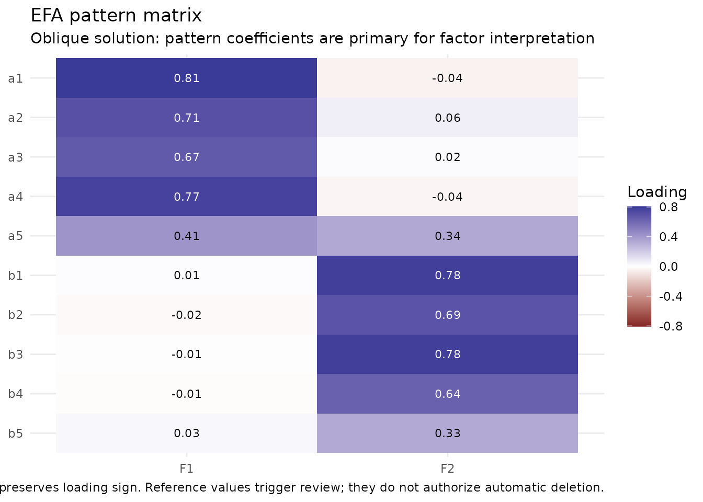
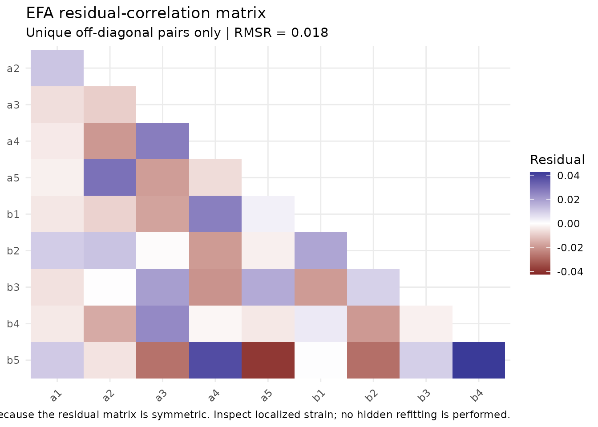

From item audit to exploratory structure
Source:vignettes/exploratory-workflow.Rmd
exploratory-workflow.RmdWhy this workflow is staged
Exploratory factor analysis is not a scale-purification button. Before interpreting an exploratory factor solution, researchers should know what items are being analyzed, how they are coded, whether the correlation model matches the intended measurement level, and how many dimensions are substantively plausible.
nomologR therefore separates three questions:
-
nomo_screen()— What does the item/data set look like? -
nomo_factors()— How many latent dimensions deserve investigation? -
nomo_efa()— What does a requested exploratory structure look like?
The handoff is deliberate: no stage silently deletes items, changes the requested factor count, or treats a numerical reference value as proof.
A reproducible two-factor example
The example below has two correlated latent variables with four indicators each. The population structure is intentionally clear so that the workflow can be inspected against a known data-generating process.
set.seed(2026)
n <- 400
f1 <- rnorm(n)
f2 <- 0.35 * f1 + sqrt(1 - 0.35^2) * rnorm(n)
dat <- data.frame(
a1 = .82 * f1 + rnorm(n, sd = .55),
a2 = .78 * f1 + rnorm(n, sd = .60),
a3 = .75 * f1 + rnorm(n, sd = .62),
a4 = .80 * f1 + rnorm(n, sd = .58),
b1 = .82 * f2 + rnorm(n, sd = .55),
b2 = .78 * f2 + rnorm(n, sd = .60),
b3 = .75 * f2 + rnorm(n, sd = .62),
b4 = .80 * f2 + rnorm(n, sd = .58)
)Step 1: audit the items
scr <- nomo_screen(dat)
summary(scr)## <summary_nomo_screen>
## Cases: 400 | Items: 8 | No review flag: 8 | Review: 0 | Concern: 0
## Missingness flags: 0 | Constant: 0 | All missing: 0 | Relationship eligible: 8
##
## Integrated item review:
## # A tibble: 8 × 7
## item item_type attention pct_missing mode_prop corrected_item_rest_r
## <chr> <chr> <ord> <dbl> <dbl> <dbl>
## 1 a1 numeric_continuous none 0 0.0025 0.597
## 2 a2 numeric_continuous none 0 0.0025 0.548
## 3 a3 numeric_continuous none 0 0.0025 0.547
## 4 a4 numeric_continuous none 0 0.0025 0.544
## 5 b1 numeric_continuous none 0 0.0025 0.581
## 6 b2 numeric_continuous none 0 0.0025 0.561
## 7 b3 numeric_continuous none 0 0.0025 0.551
## 8 b4 numeric_continuous none 0 0.0025 0.574
## review_metrics
## <chr>
## 1 ""
## 2 ""
## 3 ""
## 4 ""
## 5 ""
## 6 ""
## 7 ""
## 8 ""
##
## `attention` is a review aid, not an automatic retention/deletion decision.The screening object is descriptive and diagnostic. A flag is a reason to inspect an item or coding decision, not an instruction to remove an item.
Step 2: investigate factor retention
fac <- nomo_factors(
dat,
criterion_set = "core",
n_iter = 20,
seed = 2026
)
summary(fac)## <summary_nomo_factors>
## Cases: 400 | Items: 8 | Correlation: pearson | Criteria: core
##
## Parallel-analysis rule sensitivity:
## # A tibble: 3 × 3
## rule n_factors selected
## <chr> <int> <lgl>
## 1 percentile 2 TRUE
## 2 mean 2 FALSE
## 3 crawford 2 FALSE
##
## Retention evidence:
## # A tibble: 4 × 3
## method n_factors role
## <chr> <int> <chr>
## 1 Parallel analysis 2 primary
## 2 MAP (original TR2) 2 complementary
## 3 MAP (revised TR4) 2 complementary
## 4 Empirical Kaiser criterion 2 complementary
##
## Criterion-family concordance:
## # A tibble: 1 × 3
## n_factors n_families families
## <int> <int> <chr>
## 1 2 3 Parallel analysis; MAP; Empirical Kaiser criterion
##
## Supporting adequacy evidence:
## # A tibble: 2 × 2
## metric display
## <chr> <chr>
## 1 KMO 0.844
## 2 Bartlett chi-square(28) = 1619.58, p < .001
##
## Synthesis:
## All 3 available criterion families (4 methods) point to 2 factors. Related methods within a family are grouped before concordance is summarized; this is strong converging evidence for investigating that solution, not proof of dimensionality.
##
## Factor counts are candidates for investigation, not automatic dimensionality verdicts.
## Common-factor eigenvalues come from a reduced common-variance matrix; later values can be negative.Parallel analysis is the primary retention suggestion, with MAP and
EKC providing complementary evidence. When methods disagree, the
disagreement is part of the result rather than something
nomologR resolves with a majority-vote rule.
Step 3: hand the retention result into EFA
## nomologR exploratory factor analysis
## 400 cases | 8 items | 2 factors (from nomo_factors())
## Correlation: pearson | Extraction: minres | Rotation: oblimin
## Supporting adequacy: KMO = 0.844 | Bartlett chi-square(28) = 1619.58, p < .001
##
## Item-level structural review
## # A tibble: 8 × 7
## item primary_factor primary_loading secondary_factor secondary_loading
## <chr> <chr> <dbl> <chr> <dbl>
## 1 a1 F1 0.804 F2 0.0445
## 2 a2 F1 0.806 F2 -0.0156
## 3 a3 F1 0.780 F2 -0.00173
## 4 a4 F1 0.814 F2 -0.0252
## 5 b1 F2 0.828 F1 -0.00599
## 6 b2 F2 0.782 F1 0.00271
## 7 b3 F2 0.762 F1 0.00491
## 8 b4 F2 0.806 F1 0.000922
## # ℹ 2 more variables: communality <dbl>, attention <chr>
##
## No configured numeric EFA review flags were triggered.
##
## Factor correlations
## F1 F2
## F1 1.000 0.316
## F2 0.316 1.000
##
## Off-diagonal RMSR: 0.016
##
## Largest localized residuals
## # A tibble: 5 × 4
## item1 item2 residual abs_residual
## <chr> <chr> <dbl> <dbl>
## 1 a3 b2 0.0401 0.0401
## 2 a1 b2 -0.0324 0.0324
## 3 a2 b1 -0.0241 0.0241
## 4 a2 b4 0.0223 0.0223
## 5 a3 b4 -0.0215 0.0215
##
## Interpretation rule: numerical references trigger inspection, not automatic deletion or hidden refitting.Passing the nomo_factors object carries forward the
selected item set, modeling types, correlation model, and missing-data
strategy. The primary parallel-analysis count becomes the
requested EFA factor count. If M2 identified
neighboring plausible solutions, nomo_efa() records that
context and recommends comparing those solutions rather than treating
the handoff as proof.
Read the item table as evidence, not a deletion list
efa$item_summary## # A tibble: 8 × 14
## item primary_factor primary_loading secondary_factor secondary_loading
## <chr> <chr> <dbl> <chr> <dbl>
## 1 a1 F1 0.804 F2 0.0445
## 2 a2 F1 0.806 F2 -0.0156
## 3 a3 F1 0.780 F2 -0.00173
## 4 a4 F1 0.814 F2 -0.0252
## 5 b1 F2 0.828 F1 -0.00599
## 6 b2 F2 0.782 F1 0.00271
## 7 b3 F2 0.762 F1 0.00491
## 8 b4 F2 0.806 F1 0.000922
## # ℹ 9 more variables: loading_gap <dbl>, communality <dbl>, uniqueness <dbl>,
## # complexity <dbl>, weak_primary <lgl>, cross_loading <lgl>,
## # low_communality <lgl>, attention <chr>, explanation <chr>The item table reports:
- the largest pattern loading;
- the second-largest pattern loading;
- the gap between them;
- communality and uniqueness;
- loading complexity;
-
KEEP,REVIEW, orSTRONG REVIEW; - a plain-language explanation for every numerical flag.
KEEP means that no configured numerical
teaching-reference flag fired. It does not mean that
theory, wording, content coverage, redundancy, or external validity
evidence has approved the item.
Pattern versus structure matrices
With oblique rotation, the pattern matrix contains regression-like factor coefficients and is the primary matrix for interpreting which indicators define which factors. The structure matrix contains item-factor correlations and also reflects correlations among the factors.
round(efa$pattern_matrix, 2)## F1 F2
## a1 0.80 0.04
## a2 0.81 -0.02
## a3 0.78 0.00
## a4 0.81 -0.03
## b1 -0.01 0.83
## b2 0.00 0.78
## b3 0.00 0.76
## b4 0.00 0.81
round(efa$structure_matrix, 2)## F1 F2
## a1 0.82 0.30
## a2 0.80 0.24
## a3 0.78 0.24
## a4 0.81 0.23
## b1 0.26 0.83
## b2 0.25 0.78
## b3 0.25 0.76
## b4 0.26 0.81
round(efa$factor_correlations, 2)## F1 F2
## F1 1.00 0.32
## F2 0.32 1.00
plot(efa, type = "pattern")
Residual strain
A plausible loading pattern can still leave localized relationships
unexplained. nomo_efa() therefore returns the reproduced
correlation matrix, the residual matrix, the off-diagonal RMSR, and
ranked residual pairs.
efa$rmsr## [1] 0.01605067
head(efa$residual_pairs, 10)## # A tibble: 10 × 4
## item1 item2 residual abs_residual
## <chr> <chr> <dbl> <dbl>
## 1 a3 b2 0.0401 0.0401
## 2 a1 b2 -0.0324 0.0324
## 3 a2 b1 -0.0241 0.0241
## 4 a2 b4 0.0223 0.0223
## 5 a3 b4 -0.0215 0.0215
## 6 a4 b1 0.0202 0.0202
## 7 a4 b4 -0.0185 0.0185
## 8 a1 b4 0.0174 0.0174
## 9 b3 b4 -0.0156 0.0156
## 10 a1 b1 0.0144 0.0144
plot(efa, type = "residuals")
Residuals are diagnostic evidence. nomologR does not
search for a better model, add correlated residuals, change the factor
count, or remove indicators behind the user’s back.
Researcher control remains explicit
The default is common-factor MINRES extraction with oblimin rotation. Researchers may choose another common-factor extraction or rotation, but those choices remain visible in the result and decision log. For example:
efa_varimax <- nomo_efa(
dat,
factors = 2,
rotation = "varimax"
)An orthogonal choice is permitted rather than prohibited, but the output asks the researcher to justify the assumption that the factors should be uncorrelated.
For numeric Likert items, declare the intended modeling level rather than assuming that integer storage proves continuous or ordinal measurement:
What should happen next?
EFA contributes exploratory evidence about latent structure. A
defensible measurement workflow still requires theoretical
interpretation and, where feasible, confirmation on fresh or holdout
data. The next nomologR milestone is confirmatory factor
analysis.
Methodological treatments that motivate the package’s EFA philosophy include Fabrigar, Wegener, MacCallum, and Strahan (1999), Watkins (2018), and later reviews emphasizing common-factor models, evidence-based retention, and oblique rotation when factor correlations are plausible.